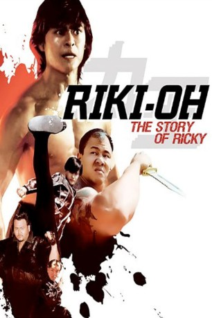
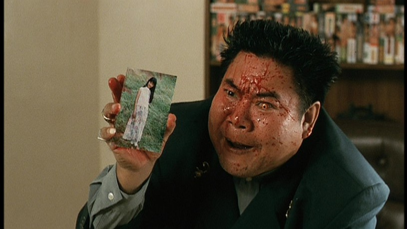
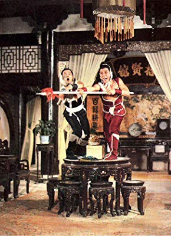

#11353 Story of Ricky
Alternativ: Riki-Oh: The Story of Ricky (Englischer Titel)
 
 IMDB-Wertung: 7.1 / 10
IMDB-Wertung: 7.1 / 10  Metascore: 0
Metascore: 0 
Nachdem er den Tod seiner Freundin gerächt hat, wird der mit übernatürlichen Kräften gesegnete Ricky in ein Gefängnis gesteckt. Dort wird er vom Direktor und seinen Handlangern auf übelste Art und Weise gefoltert und misshandelt. Nachdem Gerechtigkeitsfanatiker Ricky zunächst versucht, friedlich zu bleiben, platzt ihm schließlich der Kragen und er nimmt unter den Jubelrufen seiner unterdrückten Mitgefangenen den Kampf gegen den Direktor auf, der das Gefängnis zudem als Anbauort für Drogen mißbraucht.
Jahr: 1991
Dauer: 92 Minuten
FSK: 18
Land: Hong-Kong Studio: Laser ParadiseTonspuren:
Untertitel: Deutsch,
Auflösung: 1080p (1920x1080) Größe: 8017 MB
Genre: Action, Thriller, Komödie
Regisseur: Ngai Choi Lam
Drehbuch: Tetsuya Saruwatari, Masahiko Takajo, Ngai Choi Lam
Soundtrack: Fei Lit Chan
Darsteller:
- Siu-Wong Fan als Riki-Oh Saiga
-  Mei Sheng Fan als Cyclops Dan
- Ka-Kui Ho als The Warden
- Yukari Ôshima als Huang Chaun
- Kôichi Sugisaki als Taizan
- Frankie Chi-Leung Chan als Hai
- Kwok-Pong Chan als
-  Phillip Chung-Fung Kwok als
- Tetsurô Tanba als
- Gloria Yip als
- Biu Lung als
- Yuk-San Cheung als
- Kwok-Ping Choi als
- Suet Lam als
- Chi-Hung Ling als
- Long Kong als
- Gregory Marshall Smith als
- Kan-Wing Tsang als
- King Chan als
- Ji Keung Wong als
- Kwai-Hung Wong als Shorty
- Kwok-Leung Wong als
- Kai Wing Lam als
- Yiu-Sing Cheung als
- Chi-Shing Chiu als
- Kin-Shing Choi als
- Jackson Ha als
- Yung-Chang Ho als
- Shung Fung Lau als
- Yu-Wah Szeto als
- Simon Cheung Yuk-San als
- Simon Broad als Riki-Oh Saiga / Assistant Warden Dan (uncredited)
- John Culkin als
- Pierre Tremblay als Oscar / Narrator (uncredited)
Datei: X:\FSK18-Eastern\Story of Ricky (1991, FSK18, 1920x1080).mkv seit 24.06.2019
Festplatte: FSK18
 Es gibt insgesamt 102 Filme in der Gruppe 'FSK18-Eastern'
Es gibt insgesamt 102 Filme in der Gruppe 'FSK18-Eastern'